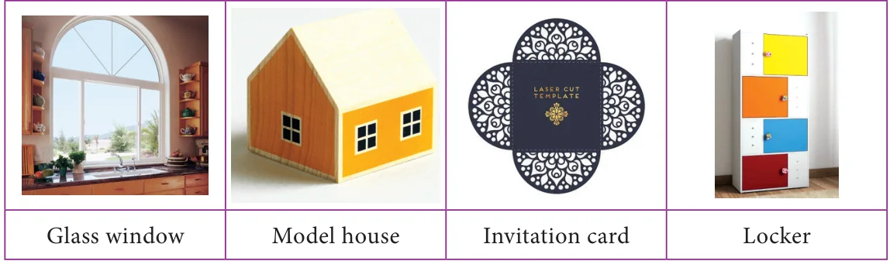
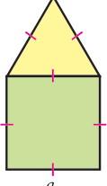
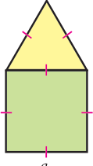
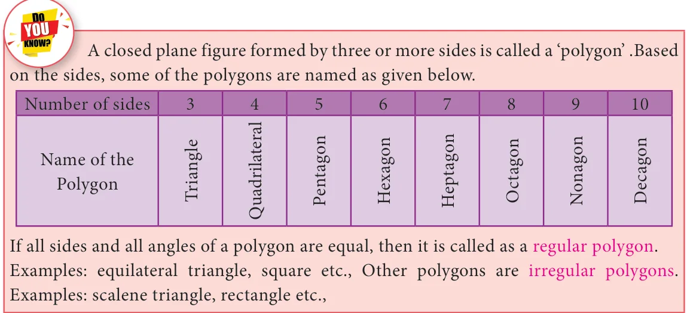
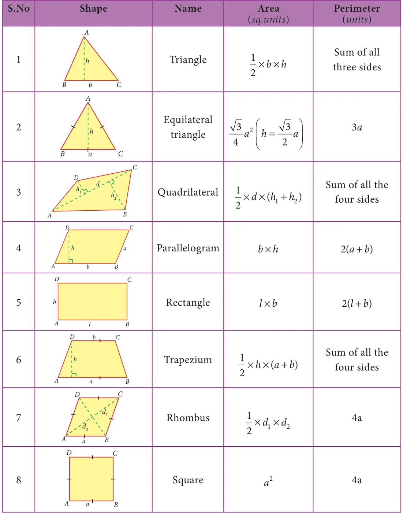
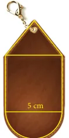
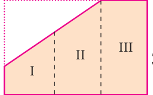
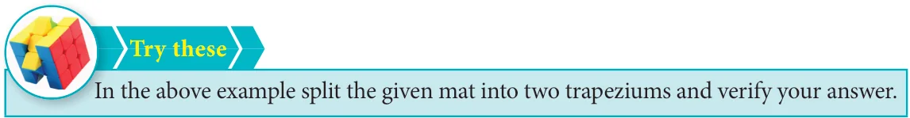
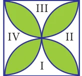

In our day-to-day life, we use infinitely many things with shapes like circle, triangle, square, rectangle, rhombus etc., don’t we? We use them separately as well as with two or three or more shapes combined together as shown in the following figures.

What do we observe from the above figures?
The shape of a glass window is like a semi-circle placed over a rectangle whereas the front - facing wall of a model house looks like a triangle over a square.
Likewise, list the shapes used to make an invitation card and a locker. Thus, two or more plane figures joined with the sides of same measure give rise to combined shapes.
2.3.1 Perimeter of combined shapes
The perimeter of a combined shape is the sum of all the lengths of the sides that form a closed boundary.
For example, observe the Fig. 2.19 which has a square of side a units and an equilateral triangle of side a units combined together.

Though a square has 4 sides and an equilateral triangle has 3 sides, when they are combined together, we will have a total of only 5 sides as the boundary of the combined shape and not 7 sides. Isn’t it? So, the perimeter of the combined shape, here is 5a units. 2.3.2 Area of combined shapes Fig. 2.19 To find the area of a combined shape, split the combined shape into known simpler shapes, find their area separately and then add them up. That is, the area of combined shapes is nothing but the sum of all the areas of the simple shapes in it.

To find the area of the Fig.2.20, find the area of the square and the area of the equilateral triangle separately and then add them up.
The combined shapes that we come across mostly in our day-to-day life
are irregular polygons. To find the area of the given irregular polygon, we must identify the simple shapes in it, find their areas separately and then add them up.
For example, an irregular polygonal field given below can be split into known simpler shapes as under and then its area can be found.


B B Fig. 2.21


The formulae to find the area and the perimeter of some plane figures learnt in the earlier class are tabulated below and it will be helpful to find the area and the perimeter of combined figures.

Example 2.6

Find the perimeter and area of the given Fig.2.23. p \(= \frac{22}{7}\)
Solution:
Radius of a circular quadrant, \(r = 3.5\) cm and side of a square, \(a = 3.5\) cm. The given figure is formed by the joining of 4 quadrants of a circle Fig. 2.23 with each side of a square. The boundary of the given figure consists of 4 arcs and 4 radii.
- (i)Perimeter of the given combined shape
\(= 4 \times\) length of the arcs of the quadrant of a circle \(+ 4 \times\) radius
= 4 \(\times \frac{1}{4} \times\) 2pr+ \(4r =\) 4 \(\times \frac{122}{47} \times 2 \times \times 3 5\). + \((4 \times 3 5\). ) \(= 22 + 14 = 36\) cm (approximately)
- (ii)Area of the given combined shape
= area of the square \(+ 4 \times\) area of the quadrants of the circle
\(= a +\) 4 \(\times \frac{1}{4}\) pr \(= (3 5\). \(\times 3 5\). )+ \(\frac{22}{7} \times 3 5\). \(\times 3 5\).
2 2
\(A = 12.25+38.5 = 50.75\) cm (approximately)
Example 2.7

Nishanth has a key-chain which is in the form of an equilateral triangle and a semicircle attached to a square of side 5 cm as shown in the Fig. 2.24. Find its area. (p \(= 3 14\). , \(3 =1 732\). )
Solution:
Side of the square \(= 5\) cm Diameter of the semi-circle \(= 5\) cm \(\Rightarrow\) Radius \(= 2.5\) cm Fig. 2.24 Side of the equilateral triangle \(= 5\) cm \(\therefore\) Area of the key-chain = area of the semi circle + area of the square + area of the equilateral triangle
\(= \frac{1}{2} =\) \(\times 2 5\). + \((5 \times 5) +\) \(43 \times 5 \times\) 5 \(= .81+ +10 83\).

\(= 45.64\) cm (approximately)
Example 2.8
A 3-fold invitation card is given with measures as in the Fig. 2.25. Find its area.

Solution:
Figures I and II are trapeziums separately as well as combinedly. The parallel sides of the combined trapezium (I and II) are 5 cm and 16 cm and its height, \(h = 8 + 8 =16cm\), length of the rectangle (III) \(= 16\) cm and its breadth \(= 8\) cm
\(\therefore\) Area of the combined invitation card
= area of the combined trapezium + area of the rectangle
\(= 1 \times h \times\) (a \(+b)+l \times b\)
\(= 1 \times 16 \times (5+16)+16 \times 8\)
\(= 168 +128 = 296 cm^{2}\)
Aliter:
Area of the invitation card
= area of the outer rectangle -
area of the right angled triangle

\(=l \times b - \times 1 b \times h\)
\(=24 \times 16 - \times 1 11 \times 16\)
\(= 384 - 88 = 296 cm^{2}\) Fig. 2.26
Example 2.9
Seenu wants to buy a floor mat for his kitchen at home as given in Fig. 2.27. If the cost of the mat is ` 20 per square foot, what will be the cost of the entire mat?

Solution:
The mat given in the figure can be split into two rectangles
as follows:
\(\therefore\) Area of the entire mat
= area of the (I) rectangle + area of the (II) rectangle
\(=l_{1} \times b_{1} +l_{2} \times b_{2}\)
\(=5 \times 2+9 \times 2=10+18=28\) sq.feet
Cost per sq. foot = ` 20
\(\therefore\) The total cost of the entire mat \(= 28 \times\) ` \(20 =\) ` 560.

Example 2.10
Find the area of the shaded region in the square of side 10 cm as given in the

Solution:
Mark the unshaded parts of the given figure as I, II, III and IV Area of the (I) and (III) parts = Area of the square - Area of 2 semicircles 10 cm
\(= a -\) 2 \(\times \frac{1}{2}\) pr
2 2
\(=10 \times 10 - \frac{22}{7} \times 5 \times 5 = 100 - 78.57 = 21.43\) cm .
Similarly, the area of the (II) and (IV) parts \(= 21.43\) cm .
\(\therefore\) Area of the unshaded parts (I, II, III and IV)
\(= 21.43 \times 2 = 42.86\) cm (approximately)
\(\therefore\) Area of the shaded part = area of the square - area of the unshaded parts
\(= 100 - 42.86 = 57.14\) cm (approximately)

- 2.If the biggest circle is cut from a square of side ‘a’ units, then the remaining area in
the square is approximately \(\frac{3}{14} a\) sq.units.p \(= \frac{22}{7}\)
2
- 3.The area of the biggest circle cut out from the square of ‘a’ units \(= \frac{11}{14} a\) sq. units
(approximately)
- 4.In the given figure if \(p = \frac{22}{7}\) , the area of the unshaded part of a square
of side a units is approximately \(\frac{3}{7} a\) sq.units and that of the shaded part
is approximately \(\frac{4}{7} a\) sq.units.

Example 2.11
Find the area of an irregular polygon field whose measures are as given in the Fig. 2.29.
Solution:
The given field has four triangles (I, III, IV and V) and a trapezium (II).
Area of the triangle (I) \(= \frac{11}{22} \times \times = \times \times =\) Area of the trapezium (II) \(= \frac{11}{22}\) ( + ) \(= \times \times\) ( + ) = Area of the triangle (III) \(= \times \times = \times \times = =\)
Fig. 2.29
Area of the triangle (IV) \(= \frac{11}{22} \times \times = \times \times =\) Area of the triangle (V) \(= \frac{11}{22} \times \times = \times \times = \therefore\) The total area of the field \(= + + + + =\)